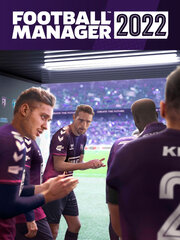

Football Manager 2022
Football Manager 2022
Details
|  | |
| Playtime | Not Played |
| Last Activity | Never |
| Added | 04/09/2022 9:52:34 |
| Modified | 03/10/2022 22:37:49 |
| Completion Status | Not Played |
| Library | Epic |
| Source | Epic |
| Platform | PC |
| Release Date | 09/11/2021 |
| Community Score | 75 |
| Critic Score | 90 |
| User Score | |
| Genre | Simulator Sport Strategy Totale |
| Developer | Sports Interactive |
| Publisher | SEGA |
| Feature | Multiplayer Single Player |
| Links | Steam Official Website Epic |
| Tag | |
Description
Football management isn’t just about winning - it’s about overcoming the odds and earning your success. Fighting your way to the top or clawing your way back from the brink; these are the moments that taste sweetest.
- Lead your club to the top, meeting the objectives of your chairman and owner, as well as the expectations of your supporters. There are 123 of the world’s leading football leagues for you to choose a team from.
- Recruit world-class coaching staff that can assist with everything from player recruitment to wonderkid development. Lean on their expertise as you navigate the everyday challenges faced in football management.
- Search the transfer market for youth prospects, or look closer to home, creating pathways for your youth academy players to realise their full potential.
- Earn respect on the tactics board, developing a playing style that’s guaranteed to deliver those all-important victories.
- Embrace the thrill of Matchday and watch your vision come to life on the pitch. Make all the key decisions as you guide your team to glory.
New for this season
FIND YOUR WINNING EDGE
Utilise the same analytics and reporting methods that real clubs use in the brand-new Data Hub. Create your own custom dashboard packed with powerful stats that’ll help you make smarter tactical and player development decisions to fire your club’s success.
ON-PITCH AUTHENTICITY
See your stars showcase their skills in better detail than ever before thanks to our improved animation engine. A revamped pressing system and changes to player sharpness means that you can dictate the tempo from the first whistle and benefit from a more authentic flow to the passages of play.
TURN DEFENCE INTO ATTACK
Implement one of the top tactical trends of the last few seasons with the new Wide Centre-Back role. Whether you’ve always favoured three-at-the-back or you see yourself as a natural innovator, you now possess even more tools to overwhelm the opposition as you fill up your trophy cabinet.
DEADLINE DAY DRAMA
Feel the highs and lows of one of the most dramatic fixtures in the football calendar. A redesigned experience replicates the unpredictability of the transfer window’s climax.
COLLABORATE LIKE CHAMPIONS
New, true-to-life staff meetings allow you and your backroom team to work in perfect harmony. Combining weekly reports on Coaching, Recruitment, Player Development and Staffing provides a level of improved organisation that will help propel your players to new heights.
FURTHER ADDITIONS
Craft your ideal managerial look with a redesigned manager creator, level up your transfer market performance with a suite of new scouting improvements and earn the bragging rights against your mates in the improved Fantasy Draft mode.